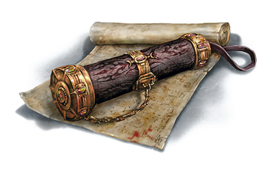

Aides de jeu
Cette section présente diverses aides de jeu (adj) non-officielles pour le jeu de rôle Dungeons & Dragons, que cela soit pour proposer de nouvelles règles, aider à la compréhension des règles officielles ou faciliter la vie du MD et des joueurs durant une partie.
- Une explication des alignements, un des concepts de D&D les plus controversés depuis toujours, ainsi qu'un test de 36 questions pour vous aider à déterminer l'alignement de votre personnage et un autre test pour définir rapidement votre premier personnage : sa race, sa classe et son historique.
- 100 idées de backgrounds en deux ou trois phrases pour vous aider à forger le passé de votre personnage, ces événements qui ont marqué sa jeunesse et formé sa personnalité, qui ont fait naître en lui des doutes et des craintes, des rêves et des ambitions, et qui déterminent souvent sa manière de voir la vie et d'interagir avec le monde qui l'entoure.
- Un article sur le concept de Bounded Accuracy, introduit par D&D 5 et qui consiste à limiter les bonus au fil des niveaux. Un gros changement de conception par rapport à D&D 3.5 par exemple. Intéressant pour comprendre la mécanique de jeu de cette dernière édition et aussi pour construire des scénarios.
- De nombreux plans de lieux, de villes ou de régions, principalement de Mike Schley mais pas seulement, que vous pouvez utiliser comme base si vous souhaitez vous lancer dans la création de vos propres scénarios ; une belle carte est en effet souvent source d'imagination. Et également des battlemaps pour vos parties sur VT.
- Diverses aides de jeu pour donner de la profondeur à la classe de votre personnage :
- comment sortir du stéréotype du barbare berserker demi-orc issu d'une tribu sauvage
- le collège de la loi pour barde, le domaine divin du vent pour clerc, le cercle des cendres pour druide et l'archétype de nomade pour rôdeur.
- de nouvelles règles pour l'ensorceleur et surtout deux nouvelles tables d'effets entropiques
- une présentation détaillée de ce qu'est la nécromancie si vous souhaitez jouer un magicien
- une explication du concept de pacte pour la classe d'occultiste, avec pleins d'idées pour définir celui de votre personnage
- 54 énigmes pour pimenter les challenges des aventuriers, et essayer de faire fonctionner leurs méninges quelques minutes entre deux combats. Parce que D&D ce n'est pas seulement fait pour taper sur des monstres.
- Un exemple qui détaille pour les novices comment se joue un combat à D&D 5.
- 101 plantes pour D&D 5 aux effets divers (curatif, antipoison, dopant, fortifiant, altérant) avec leur description complète et toutes les règles nécessaires pour trouver une plante et concocter une préparation à base d'herbes.
- Des infos historiques sur le moyen-âge comme les repères temporels, un rappel sur l'alimentation à cette époque, des donnés sur la natalité ou bien encore l'échelle des titres, le tout pour mettre un peu d'ambiance dans vos parties.
- Des outils en ligne pour D&D 5 :
- Character Builder : un outil complet pour créer un personnage D&D 5, avec génération de la feuille de perso au final
- Encounter Builder : permet aux MD de calculer l'équilibre des rencontres et de déterminer la valeur des trésors
- Dice Roller : lancer facilement des dés et calculer les probabilités de résultats
- Name Generator : elfes, halfelins, nains, demi-orcs, drakéides, gnomes, tieffelins et noms de taverne
- Filters : filtrez et triez sorts, créatures, objets magiques, dons, et générez votre propre PDF (règles, livre de sorts, cartes, bestiaire, etc)
- Online Assistant : l'application de Virtual Table d'Tapouweb pour jouer à D&D 5 en ligne en complément d'un outil de communication audio ou vidéo. L'outil gère tout ce que le média de communication ne fait pas : jets de dés, suivi des PJ et des PNJ durant les combats (Fight Tracker), messages privés entre joueurs et MD, battlemaps, etc
- De nombreuses fiches de personnages pré-tirés, avec toutes les statistiques et même un portrait, de niveau 1 à 3, pour pouvoir lancer une partie rapidement et ne pas perdre de temps à créer un perso pour une simple aventure one shot.
- Une aide pour convertir les unités de mesures anglo-saxonnes (utilisées dans les livres en VO) en unités de mesures internationales, et également pour pouvoir facilement déterminer combien pèse un trésor et la place qu'il occupe.
- 101 poisons pour D&D 5 de divers types (végétal, venin, toxine, mixture) avec leur description complète et toutes les règles nécessaires pour préparer un poison.
- Une galerie de portraits pour vos PJ, afin de donner une apparence à votre personnage favori même si vous n'avez pas un talent de dessinateur.
- Un point sur les règles concernant l'utilisation des outils, qui sont un peu floues dans le Player's Handbook, car éparpillées dans plusieurs chapitres, en particulier le fait de savoir si l'on doit maîtriser les outils de voleur pour pouvoir crocheter une serrure.
- Divers documents à télécharger au format PDF :
- Le complément indispensable des Basic Rules : Races, Classes et Sorts (DRS)
- Animaux ; Monstres ; PNJ (DRS)
- Aides de jeu : coups critiques, table d'équipement du PH, jeux d'auberge, tables de noms pour PNJ, menus d'auberge et table météo
- Cartes du jeu de Tarokka de Ravenloft
- Écran du MD, au format vertical et horizontal, au choix, et avec diverses images côté joueurs (deux dragons différents ou vue de Laelith)
- Feuilles de personnages D&D 5
- Glossaire : la correspondance VO/VF de tous les termes, sorts, monstres et objets magiques de D&D 5
- Un guide complet pour créer des aventures équilibrées à D&D 5, avoir une idée de la progression théorique du niveau des PJ et customiser les PNJ proposés dans le Monster Manual.
- Diverses rencontres détaillées avec contexte et antagonistes, qui peuvent constituer le début d'une aventure ou bien s'insérer au milieu d'une campagne pour relancer l'action.
- De nombreux scénarios D&D 5 complets pour divers niveaux, au format PDF, illustrés, en français et à télécharger gratuitement, avec pour cadre Laelith ou les Royaumes Oubliés. Vous pouvez même les enchaîner pour les transformer en une campagne.